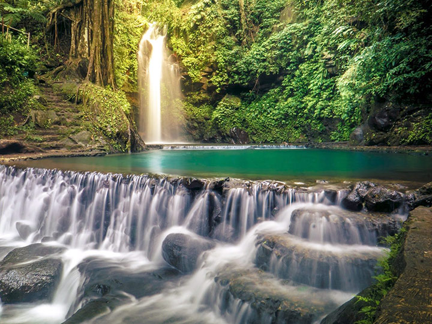
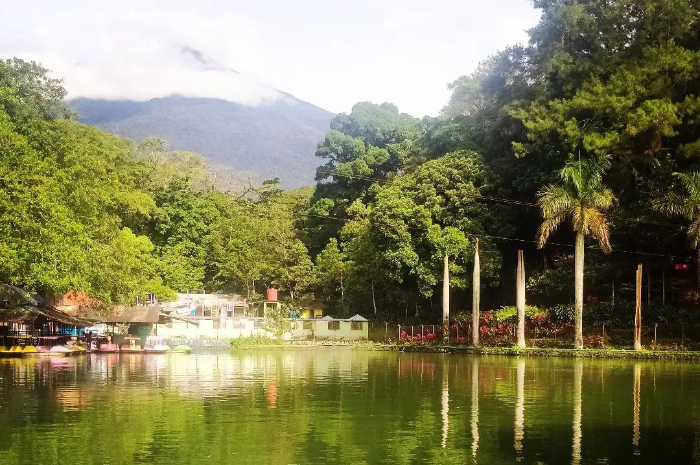

Rekomendasi Tempat Wisata di Kuningan
Berikut sejumlah rekomendasi wisata Kuningan yang bisa Anda pilih untuk didatangi bersama keluarga dan orang terdekat diantaranya:
1.Gunung Ciremai
 Gunung Ciremai adalah gunung tertinggi di Jawa Barat sehingga sering kali jadi tujuan utama pendakian untuk banyak pecinta alam.
Wisata Kuningan ini menawarkan panorama gunung yang indah dan unik, hutan alam yang asri serta air terjun yang indah.
Tidak hanya itu, di dalamnya juga ditawarkan wisata budaya yang punya nilai sejarah tinggi seperti Situ Sangiang, Gunung Pucuk, Sumur Tujuh, Sumur Cikayah dan Situ Ayu Lintang.
Bagi Anda yang tertarik untuk melakukan pendakian di Gunung Ciremai, tiket masuk yang dibebankan yaitu sekitar Rp 3.000 - Rp 7.500 tergantung dari banyaknya jumlah pendaki dan hari pendakian.
Gunung Ciremai adalah gunung tertinggi di Jawa Barat sehingga sering kali jadi tujuan utama pendakian untuk banyak pecinta alam.
Wisata Kuningan ini menawarkan panorama gunung yang indah dan unik, hutan alam yang asri serta air terjun yang indah.
Tidak hanya itu, di dalamnya juga ditawarkan wisata budaya yang punya nilai sejarah tinggi seperti Situ Sangiang, Gunung Pucuk, Sumur Tujuh, Sumur Cikayah dan Situ Ayu Lintang.
Bagi Anda yang tertarik untuk melakukan pendakian di Gunung Ciremai, tiket masuk yang dibebankan yaitu sekitar Rp 3.000 - Rp 7.500 tergantung dari banyaknya jumlah pendaki dan hari pendakian.
2.Curug Putri Palutungan

Wisata Kuningan selanjutnya adalah curug Putri Palutungan. Curug ini dipercaya dan diyakini oleh masyarakat setempat dulunya sebagai tempat persinggahan para bidadari.
Jika Anda beruntung, Anda bisa menikmati pemandangan yang menakjubkan saat hujan turun karena seringkali terlihat pelangi di atas curug. Fenomena inilah yang membuat masyarakat yakin jika dulunya para bidadari turun dari kayangan ke curug ini.
Air dari curug Putri ini dipercaya juga dapat menyembuhkan berbagai penyakit. Hal ini tentu menjadi daya tarik sendiri bagi wisata Kuningan sehingga banyak orang yang tertarik untuk mendatanginya.
Harga tiketnya pun bisa dibilang cukup terjangkau. Anda perlu membayar sekitar Rp 15.000 di hari biasa dan Rp 17.500 d hari libur atau akhir pekan. Jika membawa anak-anak, tiket yang harus Anda bayarkan sekitar Rp 5.000 di hari biasa dan Rp 8.000 di hari libur.
3.Telaga Biru Cicerem
Telaga ini berada di desa Kaduela, kecamatan Pasawahan. Telaga ini juga salah satu icon untuk wisata Kuningan karena punya daya tarik keindahan yang menakjubkan dimana air di telaga ini yang sangat bening diiringi dengan pepohonan hijau di sekitarnya.
Anda bisa mendapatkan banyak spot foto yang menarik sambil mengelilingi telaga dengan menyewa perahu karet. Selain itu, Anda juga bisa menikmati pengalaman bermain dengan ikan-ikan yang ada di telaga ini.
Dengan harga tiket masuk berada di kisaran Rp 10.000 - Rp 15.000 per orangnya, Anda sudah bisa menikmati keindahan Telaga Biru Cicerem yang buka mulai pukul 07.00 - 17.00 WIB.
4.Taman Wisata Alam Linggarjati

Wisata Kuningan selanjutnya adalah Taman Wisata Alam Linggarjati yang terletak di Desa Linggarjati, Kecamatan Cilimus, Kabupaten Kuningan. Di sana Anda bisa menikmati suasana sejuk dan nyaman di tengah hamparan hutan pinus.
Selain itu, di tempat wisata ini pula Anda bisa menikmati berbagai fasilitas mulai dari berenang serta mengarungi danau dengan sepeda air, dan menghabiskan waktu di kolam pemancingan.
Ada pula warung makan, tempat ibadah, area outbond, sepeda layang, gazebo, hingga tempat bermain anak-anak.
Anda bisa mengunjungi Taman Wisata Alam Linggarjati bersama keluarga setiap hari mulai pukul 08.00-17.00 WIB dengan membayar tiket masuk sekitar Rp 10.000 - Rp 15.000 yang bisa berubah sewaktu-waktu.
5.Taman Cisantana
Beralih ke tempat wisata Kuningan selanjutnya, ada Taman Cisantana yang sering kali menjadi tempat nongkrong anak muda di Kuningan.
Selain banyak spot foto yang menarik dan instagramable, di sini Anda juga bisa menghabiskan waktu luang bersama keluarga dengan menikmati sejuknya udara di Kuningan.
Taman Cisantana yang berlokasi di Cisantana, Kecamatan Cigugur ini buka setiap hari dari jam 08.30-17.30 WIB. Anda akan dikenakan biaya tiket masuk sekitar Rp 10.000 per orangnya.